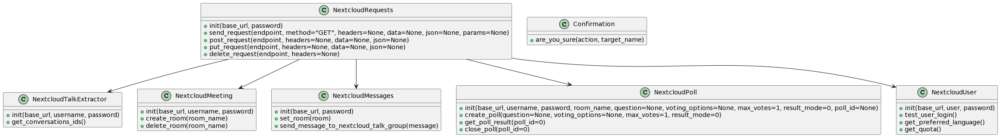

Table of Contents
Requirements
To use the Nextcloud Talk Bot, you will need:
- A Nextcloud instance with the Talk app installed
- A bot user with apppassword setup
- Python 3.7 or higher
- Pip modules: "cryptography" and "requests"
Installation
Via PIP:
pip install nextcloudtalkbot
or manually:
Clone this repository:
git clone https://github.com/sowoi/nextcloud-talk-bot.git
Configuration
There is an interactive script which guides you through the configuration, see FirstRunSetup
Usage
The FirstRunSetup does not have to be performed, but it makes it easier to use.
from nextcloud_talk_bot.Nextcloudtalkbot import NextcloudTalkBot
bot = NextcloudTalkBot()
url = bot.NEXTCLOUD_URL
username = bot.USERNAME
password = bot.PASSWORD
user = NextcloudUser(url, username, password)
preferred_language = user.get_preferred_language()
Class Diagram

Contributing
Create a PullRequest on the Git.
You are also welcome to translate.
Contact me via my website.
License
Licensed under the terms of GNU General Public License v3.0.